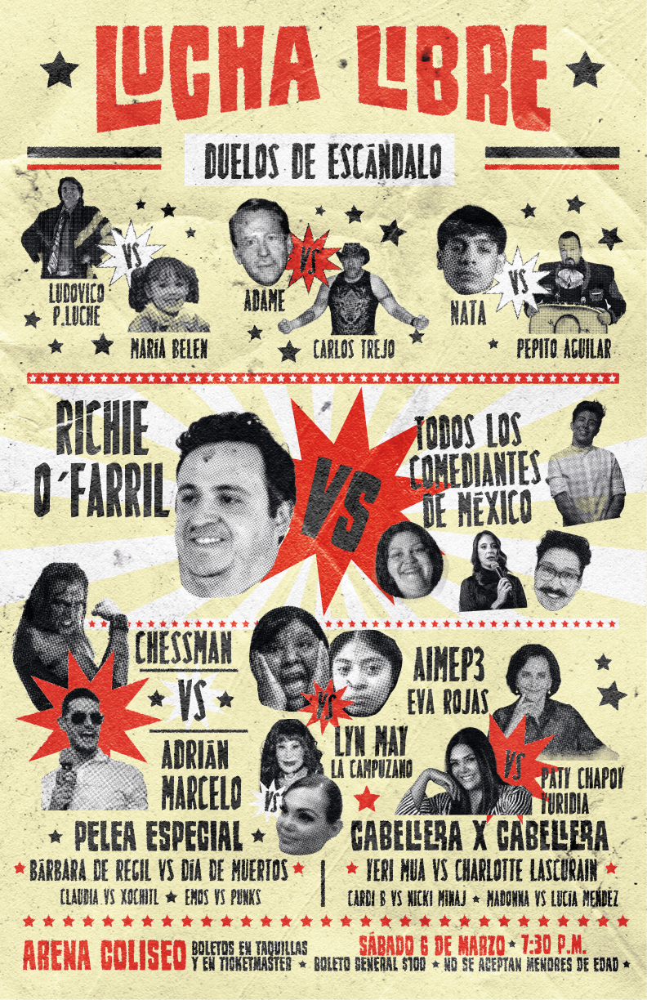
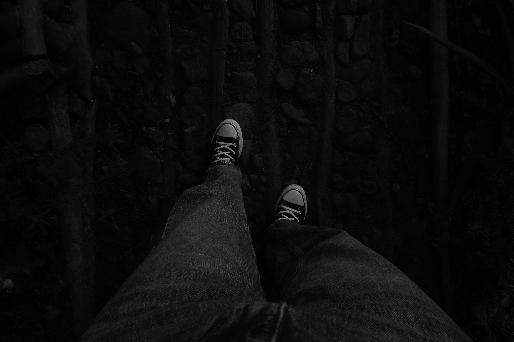

Portafolio de Trabajos

Serie Fotográfica "Conexiones"
Una exploración visual de las conexiones humanas a través de la fotografía contemporánea.
Ver más

Cartel de Lucha Libre
Un cartel dinámico inspirado en el vibrante mundo de la lucha libre mexicana.

Fotografía en Blanco y Negro
Una fotografía atemporal capturando las sombras y luces del mundo en blanco y negro.
Ver más
Cartel 8M
Un cartel conmemorativo por el Día Internacional de la Mujer, resaltando la lucha feminista.